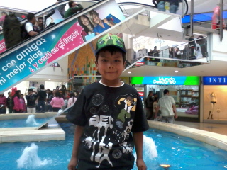

xmlns:dc="http://purl.org/dc/elements/1.1/" xmlns:cc="http://creativecommons.org/ns#" xmlns:rdf="http://www.w3.org/1999/02/22-rdf-syntax-ns#" xmlns:svg="http://www.w3.org/2000/svg" xmlns="http://www.w3.org/2000/svg" xmlns:sodipodi="http://sodipodi.sourceforge.net/DTD/sodipodi-0.dtd" xmlns:inkscape="http://www.inkscape.org/namespaces/inkscape" width="210mm" height="297mm" viewBox="0 0 210 297" version="1.1" id="svg3734" sodipodi:docname="dibujo.svg" inkscape:version="0.92.1 r15371">
image/svg+xml
Edgar Quiroz
Hoja de Vida
Edgar Quiroz
Educación
Experiencia
Información Personal

Nombres:
Edgar Antonio
Apellidos:
Quiroz Ruiz
Edad:
34
Información del Perfil
Perfil:
Activo, con excelentes capacidades para aprender.
Idiomas:
Español